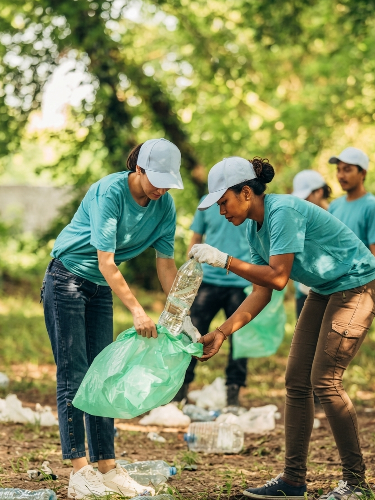
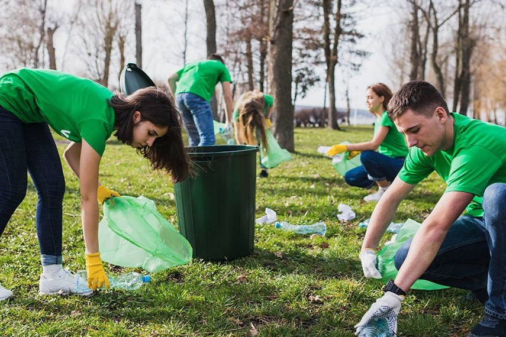

BaliEco Hub
Mari Pilah dan Kelola Sampahmu Menjadi Senyuman untuk Bali
Platform Bank Sampah Digital pertama yang mengintegrasikan pemilahan limbah rumah tangga dengan ekonomi kreatif lokal.
Platform Bank Sampah Digital pertama yang mengintegrasikan pemilahan limbah rumah tangga dengan ekonomi kreatif lokal.


BaliEco Hub adalah platform Clean-Tech dan manajemen sampah digital terintegrasi yang berfokus pada percepatan ekonomi sirkular di Pulau Bali. Kami menjembatani masyarakat, komunitas adat, pelaku bisnis, dan bank sampah lokal untuk mendigitalisasi rantai pasok pengelolaan limbah dari hulu ke hilir. Melalui inovasi pelaporan sampah liar, penyediaan stasiun setor, serta pemberian insentif ekonomi, BaliEco Hub berkomitmen untuk menahan laju tumpukan sampah di TPA, menjaga kelestarian ekosistem laut, dan mengembalikan keasrian alam Bali.
Kami bangga bermitra dengan berbagai organisasi, komunitas, dan perusahaan yang memiliki visi serupa untuk menciptakan Bali yang lebih bersih dan berkelanjutan. Melalui kolaborasi ini, kami dapat memperluas jangkauan dan dampak positif kami dalam mengelola sampah dan mendukung ekonomi sirkular di pulau ini.
Berpartisipasi aktif menjaga keasrian Bali dengan melaporkan titik tumpukan sampah ilegal di sekitarmu untuk ditindaklanjuti komunitas lokal.
Akses peta interaktif untuk menemukan titik Drop Point terdekat di Bali. Setorkan berbagai jenis sampahmu yang telah dipilah untuk ditimbang secara digital.
Tukarkan Eco-Points yang kamu kumpulkan dengan berbagai produk kerajinan kreatif lokal hasil daur ulang, voucher digital, atau dukung pendanaan aksi hijau.